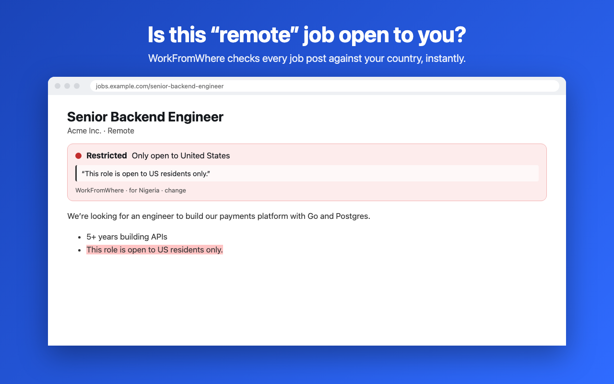

Is this “remote” job open to your country?
Many remote jobs are really “remote, US only” or “EU work permit required”, and the rule is hidden at the bottom of the post. WorkFromWhere is a free remote job location checker for Chrome. It reads the post and shows a badge: 🟢 open to you, 🔴 restricted or 🟡 unclear, with the exact sentence highlighted.
Add to Chrome, it’s free
Works where you job-hunt
LinkedIn Jobs, Indeed (every country), SEEK (Australia & New Zealand), StepStone, Totaljobs, Reed, XING, JOIN, We Work Remotely, Remote OK, Wellfound, and company job pages on Greenhouse, Lever, Ashby, Workable, SmartRecruiters, Personio and Recruitee. On any other page, click the icon and choose “Check this page”.
Understands how job posts really say it
Pro: $4.99/month or $29 lifetime
- Badges on search-result lists, and hide the jobs you can’t take
- Required hours shown in your own time zone
- Save open jobs and export to CSV
- Your own phrase rules
Private by design
No account, no tracking, no uploads. Everything runs on your computer. It reads only the page you’re viewing and never applies, clicks or submits anything for you. Privacy policy.